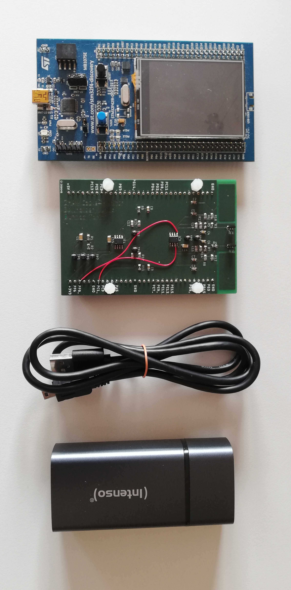
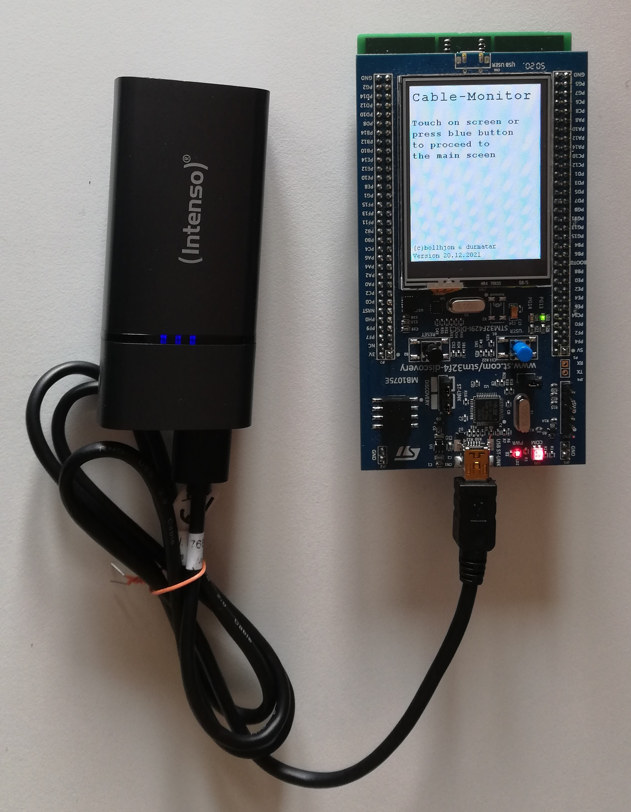
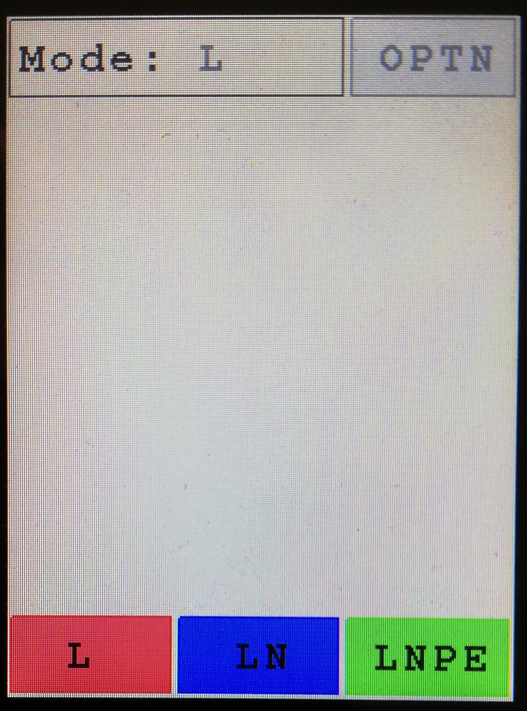
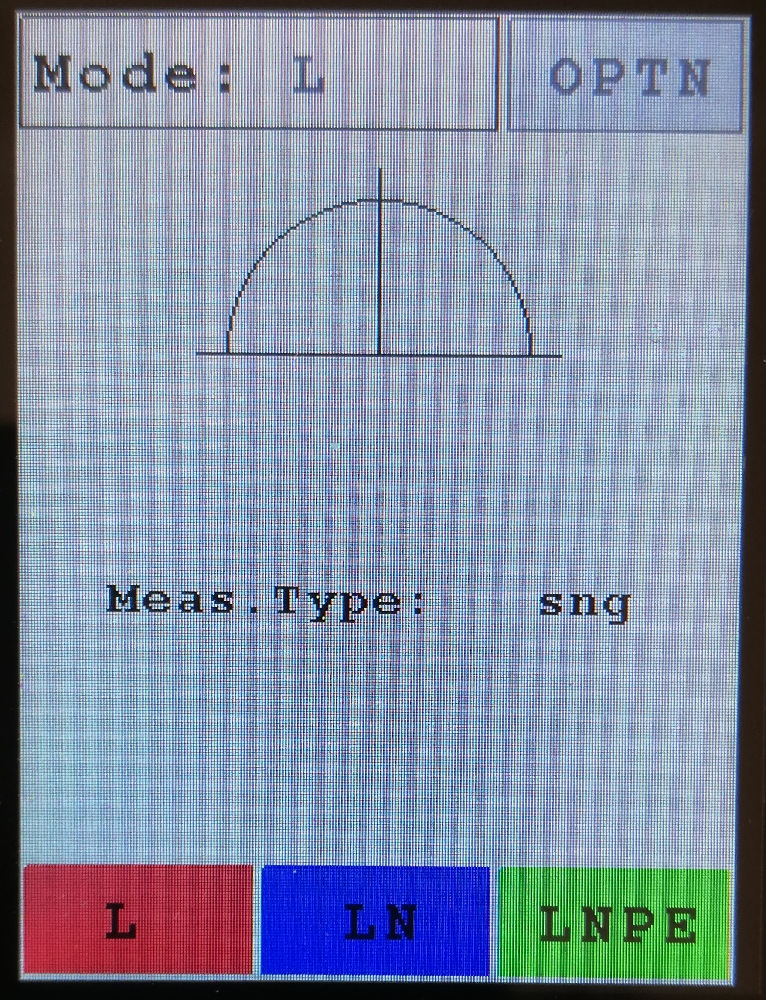
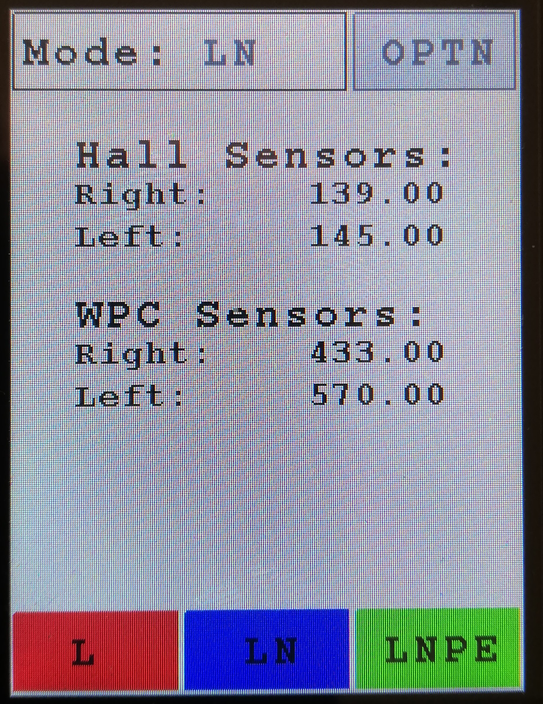
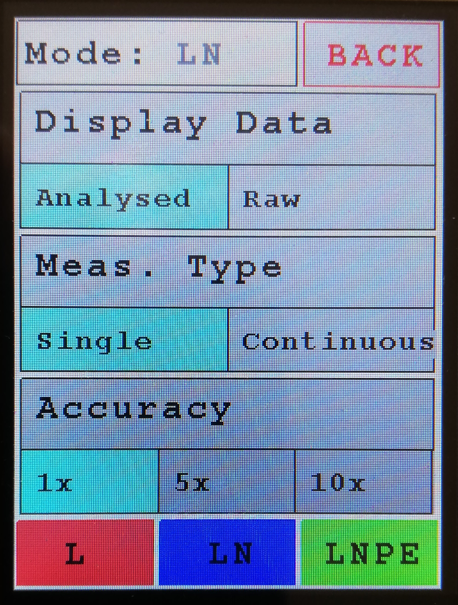

|
CableMonitor
ZHAW ET.PM3 Durmaz, Bollhalder
|
|
CableMonitor
ZHAW ET.PM3 Durmaz, Bollhalder
|
To get started smothly, this guide is seperated into three sections:
Required Hardware:

Assembly

User Interface
These user inputs and outputs are implemented to controll the device:

Top bar: At the top left there is the mode display. It shows the current selected mode.
Depending on the latest analysed meassurement the background gets coloured green if a cable was detected and red if no cable could be detected.
At the top right a button is placed whitch leads to the options and back.
Bottom bar: At the bottom a button row is displayed. With these buttons the selected mode can be changed.
Center: After a completed meassurement the results get drawn to the center of the screen or the Options get displayed.
 
Depending on the selected options the analysed data (left) or the raw measurements (right) get displayed.
When the options view is openend, the view gets displayed and options can be selected.

Display Data
Select if the collected data should be analysed or displayed raw.
Meassurement Type
Select if only a single meassurement should be conducted and displayed or if measurements should be taken and displayed continously.
Accuracy
Select how many meassurement cycles should be taken. If it is set higher than one cycle the accuracy gets displayed and the standard deviation gets caluclated.